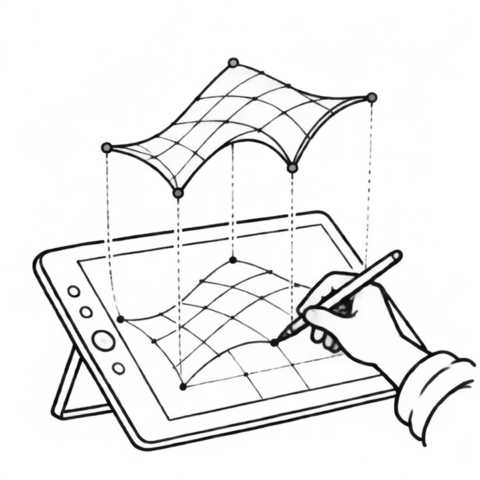

01 / TECHNOLOGY AS A TOOLTHINK
技術は、
可能性を広げるために。

3D CAD、BIM、プログラミング。
デジタルツールは、より自由に考え、試し、伝えるための手段。
技術を目的化せず、設計者が自然に使いこなせるものにしていきたい。
01
Thoughts
DESIGN PHILOSOPHY
新しい技術を使うこと自体が、目的ではない。
建築やものづくり、人と人のつながりに、
これまでにない可能性を生み出したい。

3D CAD、BIM、プログラミング。
デジタルツールは、より自由に考え、試し、伝えるための手段。
技術を目的化せず、設計者が自然に使いこなせるものにしていきたい。
形を考えるだけでなく、材料や加工、組み立て方まで考える。
モデルと実物を行き来しながら、アイデアを現実の空間に結びつける。
デジタルと手を動かすものづくり、その両方を大切にしたい。
建築も、家具も、デジタル空間も。
つくることの先には、そこを使い、集まり、つながる人がいる。
人の体験や関係を豊かにするデザインを考え続けたい。